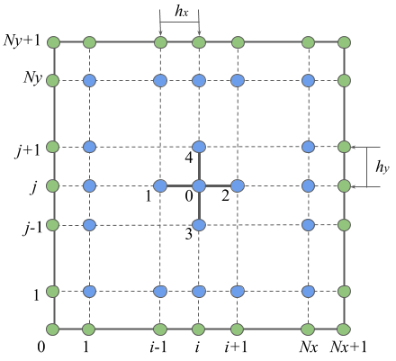

import numpy as np10 Conducción de calor No estacionaria.
Objetivo.
Resolver la ecuación de calor no estacionaria en 2D usando un método explícito.
HeCompA - 02_cond_calor by Luis M. de la Cruz is licensed under Attribution-ShareAlike 4.0 International


Trabajo realizado con el apoyo del Programa UNAM-DGAPA-PAPIME PE101922
11 Conducción de calor
Jean-Baptiste Joseph Fourier fue un matemático y físico francés que ejerció una fuerte influencia en la ciencia a través de su trabajo Théorie analytique de la chaleur. En este trabajo mostró que es posible analizar la conducción de calor en cuerpos sólidos en términos de series matemáticas infinitas, las cuales ahora llevan su nombre: Series de Fourier. Fourier comenzó su trabajo en 1807, en Grenoble, y lo completó en París en 1822. Su trabajo le permitió expresar la conducción de calor en objetos bidimensionales (hojas muy delgadas de algún material) en términos de una ecuación diferencial:
\[ \dfrac{\partial u}{ \partial t} = \kappa \left(\dfrac{\partial^2 u}{ \partial x^2} + \dfrac{\partial^2 u}{ \partial y^2}\right) \]
donde \(u\) representa la temperatura en un instante de tiempo \(t\) y en un punto \((x,y)\) del plano Cartesiano y \(\kappa\) es la conductividad del material.
La solución a la ecuación anterior se puede aproximar usando el método de diferencias y una fórmula explícita de dicha solución es la siguiente:
\[ u_{i,j}^{n+1} = u_{i,j}^n + \dfrac{h_t\kappa}{h^2} \left(u_{i+1,j}^n + u_{i-1,j}^n + u_{i,j+1}^n + u_{i,j-1}^n - 4u_{i,j}^n\right) \]
donde: - \(u_{i,j} = u(x_i, y_j), u_{i+1,j} = u(x_{i+1}, y_j), u_{i-1,j} = u(x_{i-1}, y_j), u_{i,j+1} = u(x_i, y_{j+1}), u_{i,j-1} = u(x_i, y_{j-1})\). - El superíndice indica el instante de tiempo, entonces el instante actual es \(n = t\) y el instante siguiente es \(n+1 = t + h_t\), con \(h_t\) el paso de tiempo. - En este ejemplo \(h_x = h_y\).
Usando esta aproximación, vamos a realizar una ejemplo de conducción de calor, pero para ello necesitamos conocer las herramientas de numpy y de matplotlib.
11.1 Ejercicio 1.
 Calculemos la transferencia de calor por conducción en una placa cuadrada unitaria usando el método de diferencias finitas. El problema se describe de la siguiente manera: \[ \dfrac{\partial u}{ \partial t} = \kappa \left(\dfrac{\partial^2 u}{ \partial x^2} + \dfrac{\partial^2 u}{ \partial y^2}\right) \] \[ \begin{eqnarray} \hline u(x,y,t=0) & = & 0 \qquad \text{Condición inicial}\\ \hline u(0,y,t) & = & 20 \qquad \text{Condiciones}\\ u(1,y,t) & = & 5 \qquad \qquad \text{de}\\ u(x,0,t) & = & 50 \qquad \text{frontera}\\ u(x,1,t) & = & 8 \\ \hline \end{eqnarray} \]
1. Definir los parámetros físicos y numéricos del problema:
# Parámetros físicos
k = 1.0 # Conductividad
Lx = 1.0 # Longitud del dominio en dirección x
Ly = 1.0 # Longitud del dominio en dirección y
# Parámetros numéricos
Nx = 9 # Número de incógnitas en dirección x
Ny = 9 # Número de incógnitas en dirección y
h = Lx / (Nx+1) # Espaciamiento entre los puntos de la rejilla
ht = 0.0001 # Paso de tiempo
N = (Nx + 2)* (Ny + 2) # Número total de puntos en la rejilla2. Definir la rejilla donde se hará el cálculo (malla):
x = np.linspace(0,Lx,Nx+2) # Arreglo con las coordenadas en x
y = np.linspace(0,Ly,Ny+2) # Arreglo con las coordenadas en y
print(x)
print(y)[0. 0.1 0.2 0.3 0.4 0.5 0.6 0.7 0.8 0.9 1. ]
[0. 0.1 0.2 0.3 0.4 0.5 0.6 0.7 0.8 0.9 1. ]xg, yg = np.meshgrid(x,y) # Creamos la rejilla para usarla en Matplotlib
print(xg)
print(yg)[[0. 0.1 0.2 0.3 0.4 0.5 0.6 0.7 0.8 0.9 1. ]
[0. 0.1 0.2 0.3 0.4 0.5 0.6 0.7 0.8 0.9 1. ]
[0. 0.1 0.2 0.3 0.4 0.5 0.6 0.7 0.8 0.9 1. ]
[0. 0.1 0.2 0.3 0.4 0.5 0.6 0.7 0.8 0.9 1. ]
[0. 0.1 0.2 0.3 0.4 0.5 0.6 0.7 0.8 0.9 1. ]
[0. 0.1 0.2 0.3 0.4 0.5 0.6 0.7 0.8 0.9 1. ]
[0. 0.1 0.2 0.3 0.4 0.5 0.6 0.7 0.8 0.9 1. ]
[0. 0.1 0.2 0.3 0.4 0.5 0.6 0.7 0.8 0.9 1. ]
[0. 0.1 0.2 0.3 0.4 0.5 0.6 0.7 0.8 0.9 1. ]
[0. 0.1 0.2 0.3 0.4 0.5 0.6 0.7 0.8 0.9 1. ]
[0. 0.1 0.2 0.3 0.4 0.5 0.6 0.7 0.8 0.9 1. ]]
[[0. 0. 0. 0. 0. 0. 0. 0. 0. 0. 0. ]
[0.1 0.1 0.1 0.1 0.1 0.1 0.1 0.1 0.1 0.1 0.1]
[0.2 0.2 0.2 0.2 0.2 0.2 0.2 0.2 0.2 0.2 0.2]
[0.3 0.3 0.3 0.3 0.3 0.3 0.3 0.3 0.3 0.3 0.3]
[0.4 0.4 0.4 0.4 0.4 0.4 0.4 0.4 0.4 0.4 0.4]
[0.5 0.5 0.5 0.5 0.5 0.5 0.5 0.5 0.5 0.5 0.5]
[0.6 0.6 0.6 0.6 0.6 0.6 0.6 0.6 0.6 0.6 0.6]
[0.7 0.7 0.7 0.7 0.7 0.7 0.7 0.7 0.7 0.7 0.7]
[0.8 0.8 0.8 0.8 0.8 0.8 0.8 0.8 0.8 0.8 0.8]
[0.9 0.9 0.9 0.9 0.9 0.9 0.9 0.9 0.9 0.9 0.9]
[1. 1. 1. 1. 1. 1. 1. 1. 1. 1. 1. ]]import matplotlib.pyplot as pltplt.scatter(xg, yg) # Graficamos la rejilla3. Definir las condiciones iniciales y de frontera: \[ \begin{eqnarray} \hline u(x,y,t=0) & = & 0 \qquad \text{Condición inicial}\\ \hline u(0,y,t) & = & 20 \qquad \text{Condiciones}\\ u(1,y,t) & = & 5 \qquad \qquad \text{de}\\ u(x,0,t) & = & 50 \qquad \text{frontera}\\ u(x,1,t) & = & 8 \\ \hline \end{eqnarray} \]
u = np.zeros((Nx+2, Ny+2))
#u = np.zeros(N).reshape(Nx+2, Ny+2) # Arreglo para almacenar la aproximación
print(u)
u[0,:] = 20 # Pared izquierda
u[Nx+1,:] = 5 # Pared derecha
u[:,0] = 50 # Pared inferior
u[:,Ny+1] = 8 # Pared superior
print(u) [[0. 0. 0. 0. 0. 0. 0. 0. 0. 0. 0.]
[0. 0. 0. 0. 0. 0. 0. 0. 0. 0. 0.]
[0. 0. 0. 0. 0. 0. 0. 0. 0. 0. 0.]
[0. 0. 0. 0. 0. 0. 0. 0. 0. 0. 0.]
[0. 0. 0. 0. 0. 0. 0. 0. 0. 0. 0.]
[0. 0. 0. 0. 0. 0. 0. 0. 0. 0. 0.]
[0. 0. 0. 0. 0. 0. 0. 0. 0. 0. 0.]
[0. 0. 0. 0. 0. 0. 0. 0. 0. 0. 0.]
[0. 0. 0. 0. 0. 0. 0. 0. 0. 0. 0.]
[0. 0. 0. 0. 0. 0. 0. 0. 0. 0. 0.]
[0. 0. 0. 0. 0. 0. 0. 0. 0. 0. 0.]]
[[50. 20. 20. 20. 20. 20. 20. 20. 20. 20. 8.]
[50. 0. 0. 0. 0. 0. 0. 0. 0. 0. 8.]
[50. 0. 0. 0. 0. 0. 0. 0. 0. 0. 8.]
[50. 0. 0. 0. 0. 0. 0. 0. 0. 0. 8.]
[50. 0. 0. 0. 0. 0. 0. 0. 0. 0. 8.]
[50. 0. 0. 0. 0. 0. 0. 0. 0. 0. 8.]
[50. 0. 0. 0. 0. 0. 0. 0. 0. 0. 8.]
[50. 0. 0. 0. 0. 0. 0. 0. 0. 0. 8.]
[50. 0. 0. 0. 0. 0. 0. 0. 0. 0. 8.]
[50. 0. 0. 0. 0. 0. 0. 0. 0. 0. 8.]
[50. 5. 5. 5. 5. 5. 5. 5. 5. 5. 8.]]f = plt.imshow(u)
plt.colorbar(f)4. Implementar el algoritmo de solución: \[ u_{i,j}^{n+1} = u_{i,j}^n + \dfrac{h_t \kappa}{h^2} \left(u_{i+1,j}^n + u_{i-1,j}^n + u_{i,j+1}^n + u_{i,j-1}^n - 4u_{i,j}^n\right) \]
ht = 0.001
r = k * ht / h**2
u_new = u.copy()
tolerancia = 9.0e-1 #1.0e-3
error = 1.0
error_lista = []
while(error > tolerancia):
for i in range(1,Nx+1):
for j in range(1,Ny+1):
u_new[i,j] = u[i,j] + r * (u[i+1,j] + u[i-1,j] + u[i,j+1] + u[i,j-1] - 4*u[i,j])
error = np.linalg.norm(u_new - u)
error_lista.append(error)
# print(error)
u[:] = u_new[:]
print(error_lista)
f = plt.imshow(u)
plt.colorbar(f)[17.2629661414254, 13.602554907075358, 11.121464292079526, 9.370340343338656, 8.089431314598079, 7.121431307338295, 6.368158288285477, 5.766710029025608, 5.275727580531657, 4.867291496014421, 4.522054027452314, 4.226261372943586, 3.9698959855402296, 3.745493517737013, 3.547373613271126, 3.3711295389631717, 3.21328287724892, 3.0710454523767496, 2.9421521475712167, 2.824741357872151, 2.7172679513259683, 2.6184387521297463, 2.5271638648303663, 2.4425193146763595, 2.363717902820954, 2.290086125094306, 2.2210456430727876, 2.1560982312045556, 2.094813422134956, 2.0368182790286324, 1.9817888683696612, 1.9294431092766995, 1.8795347490871392, 1.8318482687809046, 1.7861945617665091, 1.7424072597326865, 1.7003396024699928, 1.6598617667041742, 1.620858583384764, 1.5832275844672883, 1.5468773296753073, 1.5117259715044917, 1.4777000231834065, 1.4447332996949114, 1.4127660064863383, 1.3817439543093082, 1.3516178818527333, 1.322342870562428, 1.293877838356635, 1.2661851009139355, 1.239229990882043, 1.2129805267782563, 1.1874071245620865, 1.1624823458905373, 1.1381806779428072, 1.114478340447452, 1.0913531161802335, 1.0687842017418048, 1.0467520758851223, 1.025238383054624, 1.0042258301337272, 0.9836980946818261, 0.9636397431848914, 0.9440361580507419, 0.9248734722567947, 0.9061385107087614, 0.8878187374976269]11.2 Ejercicio 2.
Realiza los siguiente gráficos de la solución anterior: 1. Contornos llenos (contourf) y líneas de contorno negras sobrepuestas (contour). 2. Almacena el error en cada iteración y grafícalo en semi-log. 3. Realiza las dos gráficas anteriores en un solo renglón.
plt.contour(xg, yg, u, cmap='gray', levels=5)
plt.contourf(xg, yg, u, levels=50, cmap='inferno')plt.plot(error_lista)
plt.yscale('log')fig = plt.figure()
ax1 = fig.add_subplot(1, 2, 1)
ax2 = fig.add_subplot(1, 2, 2)
ax1.contour(xg, yg, u, cmap='gray', levels=5)
ax1.contourf(xg, yg, u, levels=50, cmap='inferno')
ax2.plot(error_lista)
ax2.set_yscale('log')
plt.tight_layout()11.3 Flujo de calor
Fourier también estableció una ley para el flujo de calor que se escribe como:
\[ \vec{q} = -\kappa \nabla u = -\kappa \left(\dfrac{\partial u}{\partial x}, \dfrac{\partial u}{\partial y}\right) \]
11.4 Ejercicio 3.
Usando la información calculada de la temperatura (almacenada en el arreglo u), vamos a calcular el flujo de calor usando la siguiente fórmula en diferencias:
\[ \vec{q}_{i,j} = (qx_{i,j}, qy_{i,j}) = -\dfrac{\kappa}{2h} (u_{i+1,j}-u_{i-1,j}, u_{i,j+1}-u_{i,j-1} ) \]
qx = np.zeros((Nx+2, Ny+2))
qy = qx.copy()
s = k / 2*h
for i in range(1,Nx+1):
for j in range(1,Ny+1):
qx[i,j] = -s * (u[i+1,j] - u[i-1,j])
qy[i,j] = -s * (u[i,j+1] - u[i,j-1])
plt.quiver(xg, yg, qx, qy, scale=10, zorder=10)11.5 Ejercicio 4.
Grafica el campo vectorial del flujo de calor, junto con los contornos de la temperatura (contourf y contour). Haz que tu gráfica se vea con razón de aspecto correcta de 1 por 1.
plt.contour(xg, yg, u, cmap='gray', levels=5)
plt.contourf(xg, yg, u, levels=50, cmap='cool', zorder=1)
plt.quiver(xg, yg, qx, qy, scale=10, zorder=10)
ax = plt.gca()
ax.set_aspect('equal')12 Seguimiento de partículas
 Si soltamos una partícula en un flujo, dicha partícula seguirá la dirección del flujo y delineará una trayectoria como se muestra en la siguiente figura. Para calcular los puntos de la trayectoria debemos resolver una ecuación como la siguiente:
Si soltamos una partícula en un flujo, dicha partícula seguirá la dirección del flujo y delineará una trayectoria como se muestra en la siguiente figura. Para calcular los puntos de la trayectoria debemos resolver una ecuación como la siguiente:
\[ \dfrac{\partial \vec{x}}{ \partial t} = \vec{v} \qquad \text{con} \qquad \vec{x}(t=0) = \vec{x}_o \]
donde $ = (x,y) $ representa la posición de la partícula y \(\vec{v} = (vx, vy)\) su velocidad. El método más sencillo para encontrar las posiciones de la partícula es conocido como de Euler hacia adelante y se escribe como:
\[ \vec{x}_i^{n+1} = \vec{x}_i^{n} + h_t * \vec{v}_{i}^n \]
donde \(\vec{x}_i^{n}\) representa la posición de la partícula \(i\) en el instante \(n\), \(h_t\) es el paso de tiempo y \(\vec{v}_i\) es la velocidad en la partícula \(i\) en el instante \(n\).12.1 Ejercicio 5.
Calcular y graficar las trayectorias de varias partículas usando el campo vectorial generado por el flujo de calor del ejemplo 2.
Escribimos la fórmula de Euler hacia adelante en componentes como sigue:
\[ \begin{eqnarray} x_i^{n+1} & = & x_i^{n} + h_t * vx_{i}^n \\ y_i^{n+1} & = & y_i^{n} + h_t * vy_{i}^n \end{eqnarray} \]
1. Definimos un punto inicial de forma aleatoria en el cuadrado unitario:
xo = 0.2 #np.random.rand(1)
yo = 0.5 #np.random.rand(1)
print(xo)
print(yo)0.2
0.52. Definimos arreglos para almacenar las coordenadas de la trayectoria:
Pasos = 10
xp = np.zeros(Pasos)
yp = np.zeros(Pasos)
xp[0] = xo
yp[0] = yo
print(xp)
print(yp)[0.2 0. 0. 0. 0. 0. 0. 0. 0. 0. ]
[0.5 0. 0. 0. 0. 0. 0. 0. 0. 0. ]plt.plot(xp[0], yp[0], 'o-')
plt.xlim(0,1)
plt.ylim(0,1)
3. Implementamos el método de Euler hacia adelante:
# Interpolación de la velocidad
def interpolaVel(qx, qy, xpi, ypi, h):
# localizamos la partícula dentro de la rejilla:
li = int(xpi/h)
lj = int(ypi/h)
return (qx[li,lj], qy[li,lj])ht = 0.1
for n in range(1,Pasos):
vx, vy = interpolaVel(qx, qy, xp[n-1], yp[n-1], h)
xp[n] = xp[n-1] + ht * vx
yp[n] = yp[n-1] + ht * vyprint(xp)
print(yp)[0.2 0.21738397 0.23476794 0.25215191 0.26953588 0.28691984
0.31035226 0.32940321 0.34845415 0.36750509]
[0.5 0.52197449 0.54394898 0.56592346 0.58789795 0.60987244
0.62441928 0.64213907 0.65985885 0.67757864]plt.plot(xp, yp, '.-')
plt.xlim(0,1)
plt.ylim(0,1)12.2 Ejercicio 6.
Dibuja la trayectoria de la siguiente manera. - El primer punto color naranja transparente y contorno negro. - Las posiciones siguientes de color negro sobre puestas sobre la trayectoria. - La trayectoria de color gris. - Verifica que la trayectoria no se salga del cuadrado unitario.
plt.figure(figsize=(5,5))
plt.scatter(xp[0], yp[0], c='orange', edgecolor='k', alpha=0.5)
plt.plot(xp, yp, c='gray')
plt.scatter(xp[1:], yp[1:], c='k', s=10, zorder=5)
plt.xlim(0,1)
plt.ylim(0,1)
ax = plt.gca()
ax.set_aspect('equal')
plt.savefig('trayectoria1.pdf')12.3 Ejercicio 7.
Dibuja varias trayectorias que inicien en sitios diferentes.
12.4 Ejercicio 8.
Implementa una interpolación bilineal para calcular la velocidad.